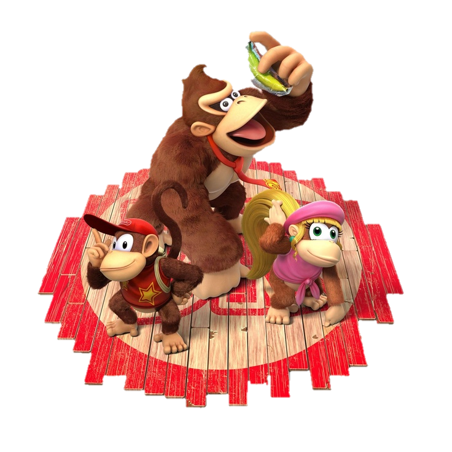

Chegamos, então, a Donkey Kong Country, produzido pela saudosa RARE e estreante no SNES em 1994. É nele que conhecemos um gorila de gravata e cheio de atitude, o lendário Donkey Kong. Seu sucesso foi instantâneo, o que lhe rendeu prestígio e inúmeras aparições em outros jogos da Big N até hoje.

Conhecemos também em Donkey Kong Country um macaquinho carismático e ágil, o Diddy Kong, que se tornou um dos personagens mais queridos e lembrados da franquia. Seu sucesso foi tanto, que ele logo se tornou protagonista, liderando Donkey Kong Country 2: Diddy’s Kong Quest. Nesse jogo também conhecemos Dixie, a namorada do Diddy.
Assim como Diddy, ela também acabou ganhando um lugar cativo com o público e garantiu sua participação em futuros jogos da saga, ocupando o papel de protagonista no terceiro jogo da saga Country .
Começando por Cranky Kong, ao analisarmos a história dos jogos, vemos que ele é o mais antigo Kong que temos notícia e um dos mais famosos. Com o papel de avô do Donkey, Cranky nos dá dicas e broncas durante os dois primeiros jogos da série Country. O personagem também é nada mais nada menos que o gorila do jogo original Donkey Kong de 1981, mas seu nome foi alterado mais tarde após o lançamento de Donkey Kong Country.
Eis que chegamos a Donkey Kong Country 3, onde temos como protagonista a Dixie e uma criança forte e chorona que se chama Kiddy Kong. Ele é um personagem interessante, mas não foi tão bem recebido pelos fãs, pois na época se esperava que o jogo posterior ao Country 2 seria com o gorila que dá nome a franquia, coisa que não aconteceu.
A sequência do jogo de 1981 foi Donkey Kong Jr, que trouxe o filho do gorila Cranky como protagonista. No título, jogamos com um gorila filhote que tenta libertar o seu pai de uma jaula. Mais tarde, é revelado que o mesmo personagem viria a ser o pai do gorila mais famoso do mundo dos games, o Donkey Kong.
Primo de Dixie e Tinny e irmão mais velho do Kiddy, Chunk aparece pela primeira vez em Donkey Kong 64, como um gorila extremamente forte. Porém, o que ele tem de força, às vezes lhe falta em coragem - ele também tem medo de altura.
Surfista, piloto de avião, mecânico e grande amigo do Dk. Funky aparece nos dois primeiros jogos da série Country nos transportando de avião pelo mapa. No terceiro jogo, ele se arrisca como mecânico e em Donkey Kong 64 ajuda o resto da família fabricando armas.
Professora, avó do Donkey e esposa do velho Cranky, Wrinkly apareceu pela primeira vez em Donkey Kong Country 2, onde era diretora da Kong Kollege. De grande ajuda para os macacos salvarem o progresso durante o jogo, ela também aparece em Donkey Kong Country 3 e Donkey Kong 64, porém neste último sua participação é apenas como um fantasma, o que indica que ela veio a falecer em algum momento da história.
Lanky é um primo dos Kong que aparenta ser um orangotango. Temos poucas informações sobre ele: em Donkey Kong 64 o estranho gorila usa uma arma para atirar uvas em seus inimigos.
Os gorilas também são empreendedores e Swanky está desde Country 2 vivendo de seu negócio: o Swanky’s Bônus Bonanza. Na história, ele possui um programa de tv onde temos que responder perguntas sobre o jogo, geralmente sobre os inimigos (o que pode render algumas vidas extras).
Também em Donkey Kong 64 conhecemos Tiny, que é irmã da Dixie Kong. No jogo ela é a Kong que consegue acessar lugares pequenos, pois tem a habilidade de se contrair.
A gorila charmosa que aparece a primeira vez em Donkey Kong Country é namorada do Dk. Ela ficava em todos os mapas com sua barraquinha, servindo de auxílio para que pudéssemos salvar o jogo. Candy também apareceu em Donkey Kong 64, onde ajudou o resto da família fornecendo melancia para aumentar o HP e instrumentos que ajudaram na luta contra os Kremlings.